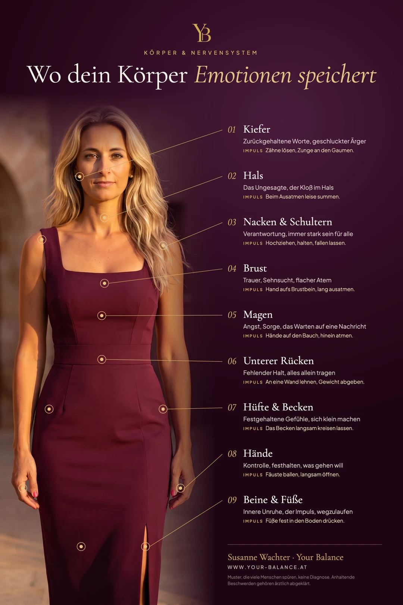

Du hast dich längst beruhigt. Der Streit ist vorbei, die Nachricht ist beantwortet, der Tag ist geschafft.
Und trotzdem sitzt da etwas. Ein Druck in der Brust. Ein Magen, der nicht aufhört zu arbeiten. Ein Kiefer, der morgens müde ist.
Der Kopf hat abgeschlossen. Der Körper noch nicht.
Genau darum geht es in diesem Artikel: wo dein Körper Gefühle festhält, warum er das tut, und wie du ihm an jeder dieser Stellen hilfst, wieder loszulassen.
Speichert der Körper wirklich Emotionen?
Ehrlich gesagt: nicht so, wie es oft erzählt wird. Es gibt keine Stelle im Gewebe, an der ein Gefühl abgelegt wird wie eine Datei.
Was es gibt, ist dein Nervensystem. Jedes Gefühl ist dort zuerst ein Körperzustand. Angst spannt den Bauch an. Trauer macht den Atem flach. Ärger presst den Kiefer zusammen. Das sind uralte Schutzreflexe, und sie laufen schneller ab, als du denken kannst.
Eine viel zitierte Studie aus Finnland hat über 700 Menschen aus verschiedenen Ländern gebeten, auf einer Körpersilhouette einzuzeichnen, wo sie Gefühle spüren. Das Ergebnis: Die Muster waren erstaunlich ähnlich, über Sprachen und Kulturen hinweg. Angst in der Brust und im Bauch. Ärger in Kopf, Armen und Händen. Traurigkeit als Schwere in der Brust.
Solange ein Gefühl durchlaufen darf, löst sich die Spannung danach wieder. Wird es geschluckt, weggelächelt oder vertagt, bleibt der Schutzreflex aktiv. Nicht die Emotion wird gespeichert. Die Anspannung, die sie begleitet hat, bleibt stehen.

Die 9 Stellen und was dein Körper dir damit sagt
1. Kiefer: die zurückgehaltenen Worte
Der Kiefer ist der Ort, an dem Ärger landet, der nicht ausgesprochen wurde. Wer tagsüber viel schluckt, presst oft nachts. Impuls: Zähne einen Fingerbreit auseinander, Zunge locker an den Gaumen, Lippen geschlossen. Mehr dazu im Artikel über verspannten Nacken und gepressten Kiefer.
2. Hals: das Ungesagte
Der Kloß im Hals entsteht, wenn der Körper sich zum Sprechen oder Weinen bereit macht und du beides zurückhältst. Impuls: Beim Ausatmen leise summen, bis du die Vibration im Hals spürst. Summen beruhigt über den Vagusnerv, der genau hier verläuft.
3. Nacken und Schultern: die Verantwortung
Schultern hoch, Kopf eingezogen: So schützt sich ein Körper, der Last trägt. Menschen, die immer stark für alle sind, kennen diese Stelle am besten. Impuls: Schultern fünf Sekunden bewusst hochziehen, dann mit einem langen Ausatmen fallen lassen.
4. Brust: Trauer und Sehnsucht
Trauer macht den Atem flach und die Brust eng, als wollte der Körper das Herz schützen. Besonders nach Verlust und Trennung sitzt hier ein Gewicht, das Worte nicht erreichen. Impuls: Eine Hand aufs Brustbein, doppelt so lang ausatmen wie einatmen.
5. Magen: Angst und Warten
Der Bauch reagiert auf Unsicherheit oft zuerst. Das Warten auf eine Nachricht, die nicht kommt, spürst du hier, lange bevor du darüber nachdenkst. Warum das so ist, erkläre ich im Artikel Warum schlägt Stress zuerst auf den Magen? Impuls: Beide Hände auf den Bauch legen und in die Hände hinein atmen.
6. Unterer Rücken: der fehlende Halt
Wenn du das Gefühl hast, alles allein tragen zu müssen, übernimmt der untere Rücken die Haltearbeit. Impuls: Mit dem Rücken an eine Wand lehnen und bewusst Gewicht abgeben. Der Körper lernt dabei etwas, das ihm fehlt: gehalten werden.
7. Hüfte und Becken: das Zurückgehaltene
Sich klein machen, sich zurücknehmen, nicht zu viel Raum einnehmen: Das zeigt sich oft in einem festen Becken. Impuls: Im Stehen das Becken langsam kreisen lassen, zehnmal in jede Richtung.
8. Hände: die Kontrolle
Geballte Fäuste, verkrampfte Finger am Handy: Die Hände halten fest, wenn du etwas nicht loslassen kannst. Impuls: Fäuste fünf Sekunden fest ballen und dann ganz langsam öffnen. Beobachte, wie sich das Öffnen anfühlt.
9. Beine und Füße: der Fluchtimpuls
Wippende Beine, kalte Füße, das Gefühl, nicht stillsitzen zu können: Hier zeigt sich ein Nervensystem, das auf Flucht eingestellt ist. Das passt oft zu innerer Unruhe ohne erkennbaren Grund. Impuls: Füße fest in den Boden drücken und den Boden bewusst spüren.
Dein Körper ist nicht gegen dich. Er hält fest, was noch keinen Ausdruck gefunden hat.
Die Übung: ein Körperscan in zwei Minuten
Du brauchst nicht zu wissen, welches Gefühl dahintersteckt. Es reicht, dem Körper zu zeigen, dass er gesehen wird.
Abends oder nach einem schwierigen Moment
Setz dich hin und geh die neun Stellen von oben nach unten durch. Frag bei jeder nur: Ist hier Spannung?
Bleib bei der Stelle, die am meisten hält. Lege, wenn möglich, eine Hand darauf.
Mach den Impuls für diese eine Stelle. Nicht alle neun, nur diese eine.
Zum Schluss dreimal lang ausatmen und bemerken, was sich verändert hat, auch wenn es wenig ist.
Am Anfang wirkt das klein. Das ist es auch. Aber jede Wiederholung zeigt deinem Nervensystem, dass die Gefahr vorbei ist. Und genau diese Erfahrung fehlt einem System, das ständig angespannt ist.
Wenn der Körper nicht loslässt
Anhaltende Schmerzen, Magenbeschwerden oder Enge in der Brust gehören immer ärztlich abgeklärt. Die Infografik zeigt Muster, die viele Menschen kennen. Eine Diagnose ersetzt sie nicht.
Wenn die körperliche Seite abgeklärt ist und die Spannung trotzdem bleibt, lohnt der Blick nach innen. In meiner Praxis arbeiten wir genau dort: an den inneren Sätzen und Mustern, die dein System in Bereitschaft halten. Mit ThetaHealing und Bioresonanz unterstützen wir den Körper dabei, Ruhe wieder halten zu können.
Wenn dein Körper seit Langem festhält
Im Einzeltermin schauen wir gemeinsam, was dein System trägt und was es braucht, um loszulassen. In der Praxis in Nüziders oder online.
Termin ansehenHäufige Fragen
Wo speichert der Körper Emotionen?
Am häufigsten spüren Menschen festgehaltene Gefühle im Kiefer, im Hals, in Nacken und Schultern, in der Brust, im Magen, in den Händen, im unteren Rücken, in Hüfte und Becken sowie in Beinen und Füßen. Genau genommen hält das Nervensystem dort die Schutzspannung, die ein Gefühl begleitet hat.
Kann unterdrückte Trauer körperlich wehtun?
Unterdrückte Gefühle halten das Nervensystem in Bereitschaft, und das kann sich als Enge, Druck oder Verspannung zeigen. Anhaltende Beschwerden gehören trotzdem immer ärztlich abgeklärt, denn nicht jede Beschwerde hat eine emotionale Ursache.
Wie löse ich gespeicherte Emotionen aus dem Körper?
Über den Körper selbst: Atmung mit langem Ausatmen, bewusstes Anspannen und Loslassen, Summen, Bewegung und Berührung. Diese Impulse zeigen dem Nervensystem, dass die Gefahr vorbei ist. Wenn die Spannung tief sitzt, hilft zusätzlich die Arbeit an den inneren Mustern, die sie aufrechterhalten.
Von Herzen, Susanne